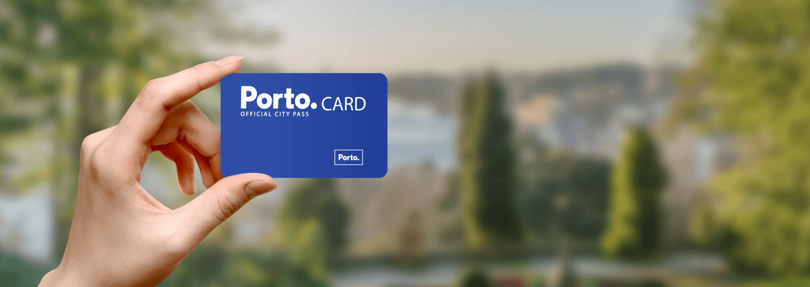
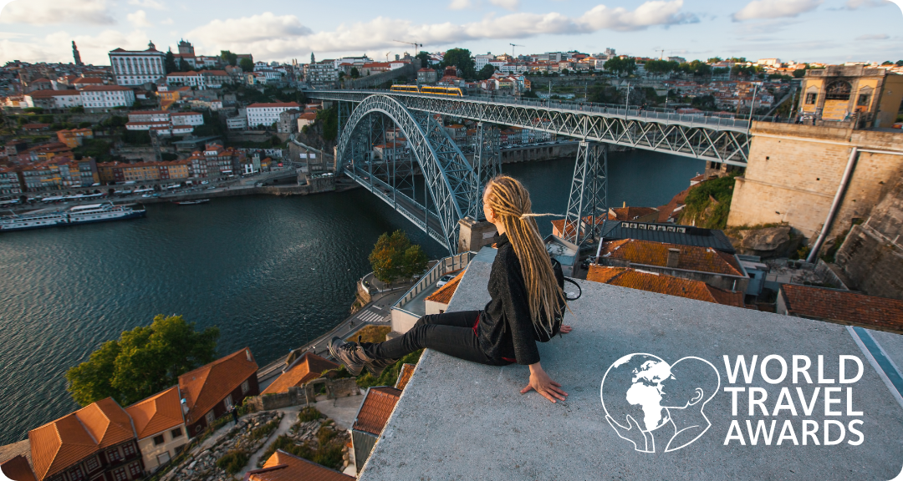

When you stay in Porto, Porto stays in you. Torre dos Clérigos

10ºC / 50ºF
Despite its UNESCO World Heritage status, Porto keeps moving to the pace of modern life. Welcome to a vibrant European city where history inspires innovative stories, where world-class research finds sustainable ways to highlight nature and where tradition fuels creativity. Welcome to the award-winning Porto City.
Attractions


PORTO.CARD
Make the most of your visit with the official city card.
Buy NowPorto wins the Europe’s Leading City Destination 2025 award
Porto shines once again on the international tourism stage after being distinguished with the Europe’s Leading City Destination 2025 award at the World Travel Awards. A celebration of the city’s soul, where culture, heritage, gastronomy and a unique energy continue to capture the hearts of everyone who visits.